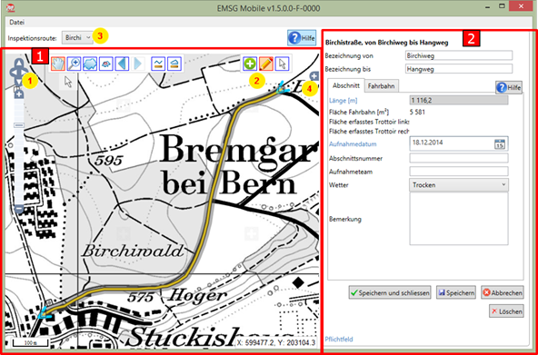

Daten erfassen
Die Bearbeitung von Daten mit EMSG-Mobile gliedert sich in zwei Bereiche (siehe Abbildung 7):
1 Kartenbereich
2 Dialogbereich

Abbildung 7: Zustandsabschnitte im GIS-Modus verwalten
Im Kartenbereich (1) gibt es folgende Bedienelemente:
Zoom- und Pan-Funktionen zum Ändern des Massstabs und Verschieben des Kartenausschnitts. (siehe Tabelle 3)
|
Symbol |
Funktion |
Hinweis zur Benutzung |
|
|
Pan (Verschieben des Kartenausschnitts) |
Mit gedrückter Maustaste schieben |
|
|
Zoom auf einen rechteckigen Ausschnitt |
Mit gedrückter Maustaste Rechteck aufziehen |
|
|
Zoom auf alle Achsen des Mandanten |
|
|
|
In der Navigations-History zurück (Pan oder Zoom rückgängig machen) |
Nur aktiv, wenn schon einmal Pan oder Zoom benutzt wurde |
|
|
In der Navigations-History vorwärts (Pan oder Zoom erneut durchführen) |
Nur aktiv, wenn schon einmal In der Navigations-History zurück geklickt wurde |
Tabelle 3: Kartenwerkzeuge
Hinweis: In EMSG-Mobile stehen ihnen nur der Kartenausschnitt rund um die jeweilige in Bearbeitung befindliche Inspektionsroute zur Verfügung und nicht das gesamte Gebiet der Gemeinde oder des Mandanten wie bei EMSG-Master.
 Icons zum Arbeiten mit einem Zustandsabschnitt (siehe Tabelle 4)
Icons zum Arbeiten mit einem Zustandsabschnitt (siehe Tabelle 4)
|
Symbol |
Funktion |
Hinweis zur Benutzung |
|
Zustandsabschnitt auswählen |
Zum Auswählen eines existierenden Zustandsabschnitts für die nachträgliche Bearbeitung seiner Datenfelder.. |
|
|
Zustandsabschnitt bearbeiten |
Zum nachträglichen Ändern der Geometrie des ausgewählten Zustandsabschnitts |
|
|
Zustandsabschnitt anlegen |
Zum Anlegen eines neuen Zustandsabschnitts. |
Tabelle 4: Icons zum Bearbeiten von Zustandsabschnitten
Dropdown zum Auswählen der Inspektionsroute.
Kartenlayer (Hintergrundkarten und Überlagernde Karten). Im Bereich der Kartenlayer können Sie mittels die Legende für ausgewählte Überlagernde Karten einblenden lassen.
Der Dialogbereich (2) verhält sich wie in Abschnitt 4.1 beschrieben.